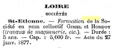

Genealogie_Complete

Graphique personnel
Parents
| Père | Date de naissance | Mère | Date de naissance |
|---|---|---|---|
 Annet VERRIER Annet VERRIER |
24 nov. 1785 |  Marie BALLET Marie BALLET |
10 nov. 1793 |
Conjoints
| Conjoint | Date de naissance | Enfants |
|---|---|---|
| Pierre HORDOT |
Événements personnels
| Type d’événement | Date | Lieu | Description |
|---|---|---|---|
 Naissance Naissance |
1834 | La Villetelle, Creuse, Limousin, FRANCE |
Notes
| En 1877 : Françoise et son mari Pierre HORDOT entrepreneur, sont domiciliés 46 rue de Roanne (formation de l’entreprise GIMET-HORDOT), puis en 1885/87 3 Rue St Michel, et enfin en 1889 s’installent 33 rue Neyron. Formation Sté Gimel-Hordot 1877 JPG - 15.5 ko 1877 Archives Comm Ste HORDOT GIMEL Recensement de 1886 - 3 St Michel JPG - 58.9 ko 1886 Recensemen HORDOT Pierre 3 r St Michel |